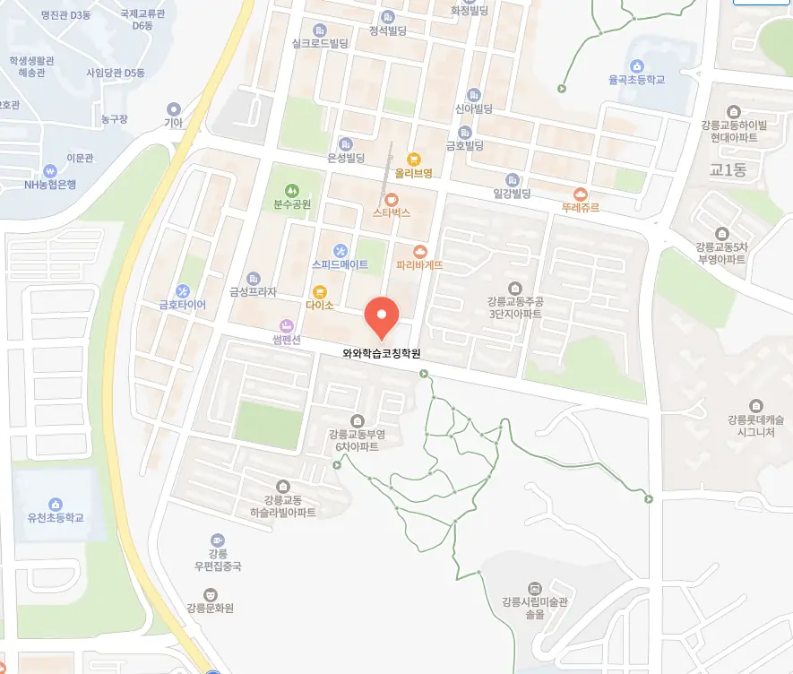

강릉교동 정시학원
강릉교동 정시학원
이는 비판적 사고의 기초를 마련하며, 추후 서술형 평가에서 강력한 논리 전개력을 갖추는 데 기반이 된다. 강릉교동 정시학원은 성장 과정의 추적이 없던 시기와는 달리, 이제는 매주 자신의 오답 패턴, 시간 소요 편차, 개념 미흡 구간 등을 그래프로 시각화하여 자신의 학습 흐름을 외부 감각으로 인식하게 된다. 두 벡터의 평행과 수직 관계처럼, 학습은 방향성목표과 크기노력가 동시에 조화되어야 효과가 극대화되며, 목표가 명확할수록 노력이 방향성 없이 흩어지는 것을 막을 수 있다. 강릉교동 정시학원은 이러한 반복과 점검의 루틴이 쌓이면, 학생은 점차 자신이 어떤 부분에서 약한지 명확히 알게 되고, 전략적으로 보완하는 능력을 자연스럽게 터득하게 된다. 이때 누적된 공부 시간보다 완료율을 중시하는 마인드가 중요하며, 5시간을 착석해도 주의 산만하게 보낸다면 그 실질 가치는 매우 낮다. 문장을 보다 단순하고 명확하게 전달하기 위해 주어를 적절히 생략하는 기법은 국어, 영어, 심지어 수학 서술형에서도 효과적이며, 긴 문장을 늘어뜨리기보다 주요 동작과 관계를 중심으로 재구성하면 독자가 빠르게 의미를 파악할 수 있다. 또한 아파트 단지에서 도보 5분 거리의 학습 카페를 활용해 환경 변화를 제공함으로써 집중력을 재충전하고, 지속 가능한 학습 습관 형성에 기여한다.